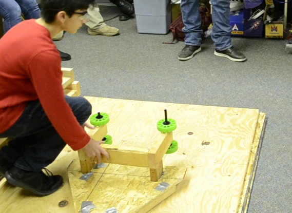
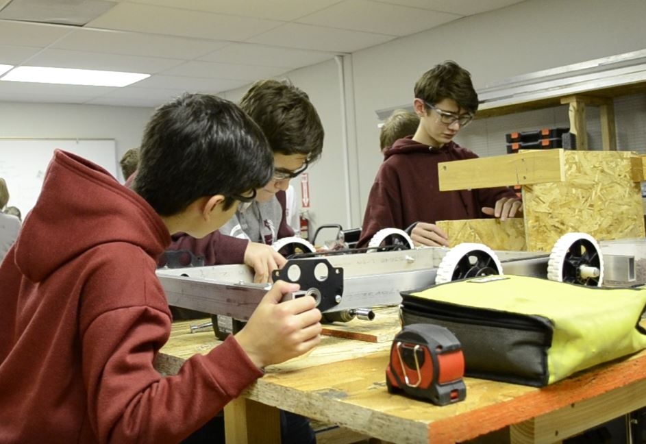

About Fabrication
Fabrication, the largest department of the team, designs, prototypes,
and builds the physical frame of the robot.They are responsible for designing and
building the drive base as well as all game-specific mechanisms on the robot such
as an intake or shooter.
Brainstorming & Prototyping
Fabrication along with the rest of the team begins each season by reading the
game manual and brainstorming ideas for various parts of the robot. After
deciding on a set of ideas, the team begins building prototypes of each design. A
prototype is a mock up of a certain design that can be easily built and tested.

Designing & Building
Once an idea has been agreed upon, members of the fabrication department then
create a model of the robot and all of it’s mechanisms using 3D drawing software
(
OnShape in our case). This
process helps the team to visualize the robot and further work out any problems
with the design. Fabrication then begins the process of building the robot, usually
starting with the drive base. As the robot is constructed, fabrication works in
parallel with other departments to attach electronics and load code onto the robot
when possible.

Pit Crew
At competition, a small group of members from fabrication, electrical, and
programming work in the team’s pit to prepare the robot for matches and fix
problems with the robot when necessary. The pit crew also includes a safety
captain who must be in the pit while it is in use in order to ensure that members
are following proper safety precautions.